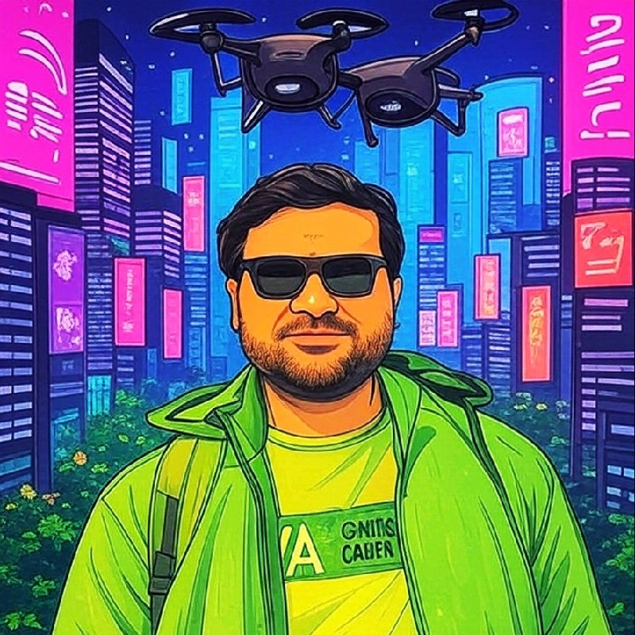

AI & SOC Automation
PowerShell, KQL, scripting and security research used to improve investigations, visibility, repeatability and analyst efficiency.
Kali Linux inspired
Advanced security workspace loading repository desktop...
Initializing desktop environment and mounting repository workspace...
/home/t4nnyyy/repositories

PROFILE // CYBERSECURITY
Sr. Cyber Security Analyst — Team Lead
Cybersecurity professional with a hands-on journey across IT support, infrastructure, cloud, endpoint security and SOC operations. I enjoy turning security telemetry into clear investigations, practical detections and measurable improvements in defensive operations.
Security operations, investigation and engineering with an infrastructure-first mindset.
PowerShell, KQL, scripting and security research used to improve investigations, visibility, repeatability and analyst efficiency.
Security monitoring, alert triage, incident investigation, threat hunting and response workflows across endpoint, identity, cloud and network telemetry.
Hands-on experience with Microsoft Defender, CrowdStrike, Cisco AMP, phishing analysis, email security and malware-analysis workflows.
Azure security, Conditional Access, identity controls, firewalls, Cisco FMC, network security and infrastructure troubleshooting.
A progression from technical support and infrastructure into security operations and team leadership.
Leading and supporting security operations with a focus on detection, investigation, incident response, security tooling and continuous improvement.
Investigated endpoint, phishing, cloud, firewall and SIEM alerts; performed malware analysis, threat hunting, threat-intelligence research and incident response; collaborated with IT and documented security findings.
Supported internal users and enterprise systems across Microsoft 365, Exchange, Active Directory, Citrix VDI, VMware vSphere and Morpheus Cloud, while contributing to onboarding, access management, documentation and troubleshooting.
Worked on firewall rules, O365 administration, mail flow, compliance and DLP, plus web-traffic and user-activity monitoring.
Selected capabilities developed across security, infrastructure, automation and software.
CURRENT FOCUS
I like working at the intersection of security operations and engineering — investigating what happened, understanding why it happened, and improving the controls or automation that help prevent the next alert.
t4nnyyy@kali:~$ whoami
Tanveer Ali // Security enthusiast // StreamShield
Type help to list commands.